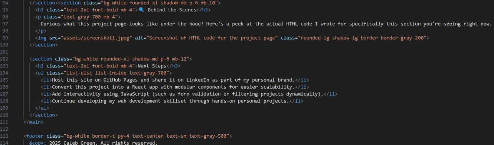

Portfolio Development Project
This website was created entirely by me over the course of 23 working hours, with the goal of presenting a polished, professional online presence. It's a place where anyone can get to know who I am, what I’ve learned, and where I’m headed in my career. I approached the build of this portfolio like I would any professional project: with clear goals, organized structure, and thoughtful design.
Project Goals
- Showcase my education, skills, projects, and experience in a user-friendly format.
- Use simple design and navigation so anyone can easily find information.
- Build everything myself to demonstrate ownership and understanding of the process.
Tools I Used
- HTML – The markup language that defines the content and structure of each webpage.
- Tailwind CSS – A utility-first CSS framework that lets me apply styling like padding, color, font size, and responsiveness directly through class names in the HTML.
- VS Code – A modern code editor with helpful extensions, live preview tools, and Git integration.
- GitHub – A platform for version control and collaboration. I use it to back up my code and will host this portfolio publicly using GitHub Pages.
What’s On the Site?
Each page of this portfolio serves a specific purpose. Here's a quick guide to what you'll find:
- Home: Welcome and brief intro
- Resume: My experience and qualifications
- Cover Letter: A tailored letter for a data-related job
- Elevator Pitch: A short introduction to who I am
- Blog: Short posts about topics I’m passionate about
- Projects: This page, documenting how I built everything
- Reflection: Thoughts on what I learned and where I'm going
How I Built It
Each page is a standalone HTML file. I wrote the content, used Tailwind to apply styling classes, and organized them with semantic HTML tags like <header>, <main>, and <footer>. For example:
<section class="bg-white rounded-xl shadow-md p-6 mb-8">
<h3 class="text-2xl font-bold mb-4">Section Title</h3>
<p class="text-gray-700">Your content goes here...</p>
</section>
This structure is repeated to maintain layout consistency and make content easy to read and navigate. I also used Git for version tracking as I iterated and improved the site.
Technical Highlights
- Responsive Design: Used Tailwind’s responsive utilities like
md:andlg:to adjust layout on different screen sizes. - Semantic HTML: Used elements like <nav>, <section>, and <footer> to improve accessibility and SEO.
- Code Reuse: Maintained a consistent header and footer structure across all pages for cohesion and simplicity.
- Deployment Ready: The site structure is designed to be hosted directly through GitHub Pages.
Challenges & What I Learned
- Ensuring clean visual hierarchy using only utility classes instead of a separate CSS stylesheet.
- Adapting layout for different devices without relying on frameworks like Bootstrap or React.
- Practicing semantic markup and accessibility-aware coding from scratch.
🔍 Behind the Scenes
Curious what this project page looks like under the hood? Here's a peek at the actual HTML code I wrote for specifically this section you're seeing right now. Everything you see on the site is built using structured HTML and styled with Tailwind CSS classes.
Next Steps
- Host this site on GitHub Pages and share it on LinkedIn as part of my personal brand.
- Convert this project into a React app with modular components for easier scalability.
- Add interactivity using JavaScript (such as form validation or filtering projects dynamically).
- Continue developing my web development skillset through hands-on personal projects.